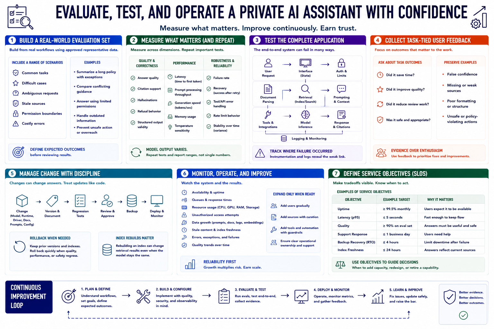

Evaluation and Operations
Connecting to LMS... Progress: in progress

Narration
Build an evaluation set from real workflows using approved representative data. Include common tasks, difficult cases, ambiguous requests, stale sources, permission boundaries, and costly errors. Define expected outcomes before reviewing results.
Measure answer quality, citation support, hallucinations, refusal behavior, structured output, latency, prompt processing, generation speed, memory, temperature, failure rate, and recovery. Repeat important tests because model output can vary.
Test the complete application. Retrieval, document parsing, prompts, tools, API limits, authentication, interface state, and logs can fail even when the base model performs well. Track where the failure occurred.
Collect user feedback tied to tasks rather than general enthusiasm. Did the assistant save time, improve quality, or create review work? Preserve examples of false confidence, missing sources, poor formatting, and unsafe actions.
Model, runtime, driver, document, prompt, and configuration updates need versioning, regression tests, change approval, backups, and rollback. Rebuilding an index can change answers even when the model stays the same.
Monitor availability, queues, resource use, unauthorized access, data growth, stale content, errors, and quality trends. Expand users, sources, or automation only when existing workflows are reliable and operational ownership is clear.
Define service objectives for uptime, latency, quality, support response, backup recovery, and index freshness. Objectives make tradeoffs visible and show when the assistant needs capacity, redesign, or retirement.